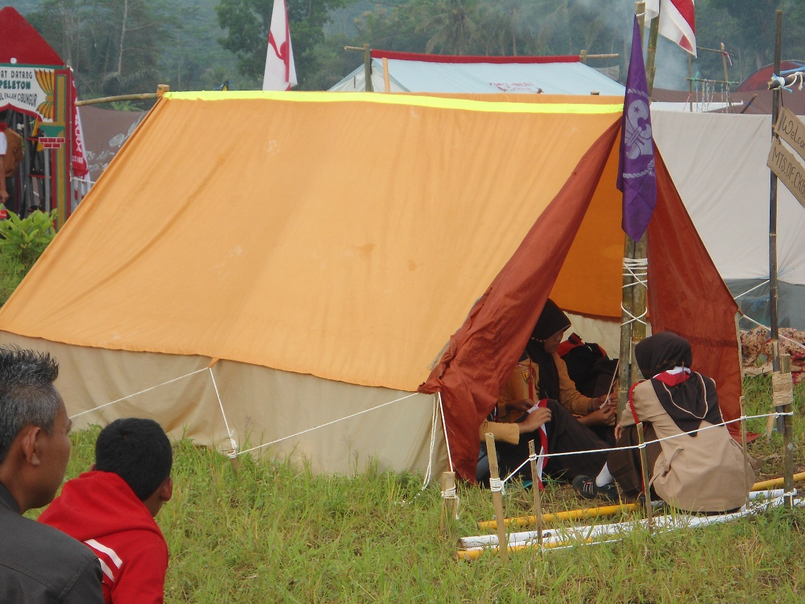

Hadrah
Hadrah MTs Darul Falah adalah ekstrakurikuler seni musik Islami yang melatih siswa dalam seni tabuh rebana dan syair-syair religi.
Hadrah MTs Darul Falah adalah ekstrakurikuler seni musik Islami yang melatih siswa dalam seni tabuh rebana dan syair-syair religi.